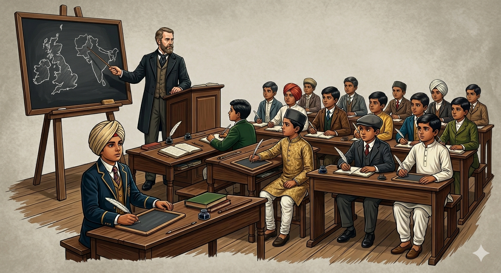
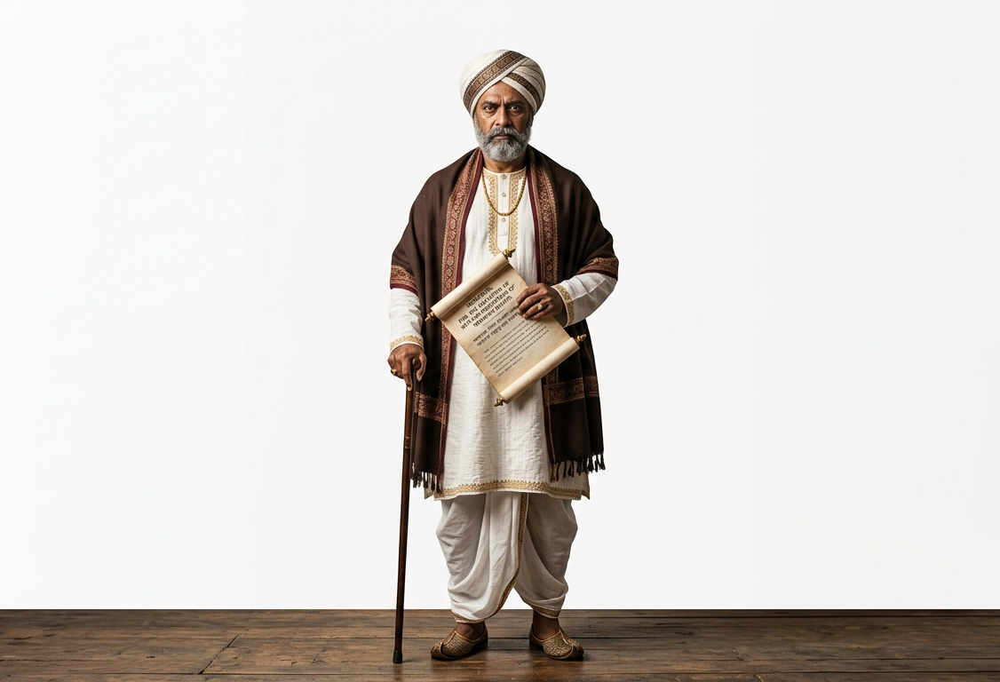
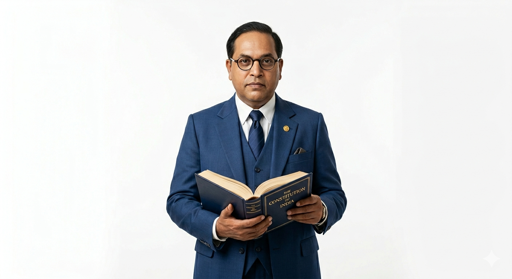

The British era brought sweeping changes to every aspect of Indian society, including education, public institutions, caste system reforms, and the condition of women. Many of these transformative changes were spearheaded by English-educated Indians.
FactPre-British Education System:
Before the East India Company, education was imparted through pathshalas and maktabs (for elementary education) and tols and madarsas (for higher education). Education was mostly limited to reading religious texts in vernacular languages, arithmetical tables, Sanskrit, Arabic, Persian, law, logic, and astronomy based on old texts.
2. Education Under the British
The main objective of the East India Company was to make a profit, not to educate Indians. Though Christian missionaries opened some English schools, their primary aim was religious promotion. However, gradual steps were taken towards formal education.
Key Educational Milestones
Charter Act of 1813: The first significant step where the British sanctioned a sum of one lakh rupees for education in India.
Early Colleges: The Hindu College (Calcutta) and Elphinstone College (Bombay) were established, creating an elite class of Indians who adopted Western etiquette and habits.
Macaulay's Minute (1835): Thomas Macaulay (Member Legislative Council) aimed to create a class of people "Indian in blood and colour, but English in taste and opinion" to act as interpreters and provide cheap manpower for the administration.
Wood's Despatch (1854): Issued by Charles Wood, it created a detailed plan for a separate department of education. Universities were established in the presidency towns of Bombay, Calcutta, and Madras.
Hunter Education Commission (1882): Appointed to look into the non-implementation of Wood's Despatch and to assess primary and secondary education.
Indian Universities Act (1904): Passed by Lord Curzon to check the growth of higher education, as he believed Indian institutions were producing political revolutionaries.
ConceptThe Great Controversy: Orientalists vs. Anglicists
A major debate arose regarding the medium of instruction in India. The Orientalists favored the traditional system with Sanskrit and Persian as the medium. The Anglicists favored English. Lord Macaulay heavily supported the Anglicists to civilize Indians and create a desire for British commodities.

Figure 1: Evolution of the Indian education system under British colonial influence
National Education Alternatives
Wardha Education Scheme (1937): Initiated by Mahatma Gandhi, who felt English education created an inferiority complex. He proposed a National Education System focused on morals, truth, self-respect, and dignity.
John Sargent Plan (1943): Proposed universal, compulsory, and free education for children between 6-14 years of age.
3. Impact of the British System of Education
Positive Impacts
The English language acted as a unifying force, helping people from different regions communicate and think of India as one motherland.
It sparked a surge of nationalism across all sections.
It created awareness about modern ideals like equality, liberty, fraternity, and democracy.
Educated women, such as Sarojini Naidu, actively joined the national movement.
Negative Impacts
It created a deep division between English-educated Indians and the rest of the masses.
Indigenous literature, ancient philosophy, and native thoughts were largely ignored.
British textbooks deliberately glorified British administration while belittling Indian achievements.
Education became a luxury only the rich could afford.
4. Social Impact and Legal Reforms
The British considered Indians as barbarians and discriminated against them. However, English-educated Indian reformers utilized modern ideas to free Indian society from evils, superstitions, and rigid rituals, compelling the British to pass crucial social reform laws.
Abolition of Sati (1829): The inhuman practice of burning a widow on her husband's funeral pyre was banned by Governor-General William Bentinck at the insistence of Raja Ram Mohan Roy.
Female Infanticide: The killing of infant girls was banned by law in 1870.
Widow Remarriage Act (1856): Legalized due to the persistent efforts of Ishwar Chandra Vidyasagar.
Child Marriage Ban: Banned initially in 1891 and strictly in 1929.
ImportantThe Sharda Act of 1929:
This landmark legislation fixed the minimum marriageable age at 18 years for girls and 21 years for boys. It applied to all people living in British India (not just Hindus) and was a massive victory for women's groups who opposed child marriage.

Figure 2: Raja Ram Mohan Roy, the 'Father of Modern India', who led the fight for social reforms
5. Key Socio-Religious Reformers
The 19th century saw a social transformation that kindled the spirit of nationalism. Lower castes and enlightened leaders rose against social injustice.
Shri Narayana Guru (1854-1928): A great saint from the Ezhava community in Kerala. He campaigned against the caste system and untouchability, propagating the message of "one god, one caste, and one religion."
Jyotiba Phule (1827-1890): A reformer from Maharashtra who founded the Satya Shodhak Samaj for the upliftment of low and oppressed classes. He used education as a tool for liberation.
Veeresalingam Kandukuri (1848-1919): Considered the prophet of modern Andhra Pradesh. He wrote the magazine Vivekavardhini, championed women's education, and arranged the first widow remarriage in 1881.
Periyar E.V. Ramasamy (1879-1973): A revolutionary from Tamil Nadu who launched the Self-Respect Movement in 1925 to fight for Dravidian rights and the eradication of the caste system.
Swami Dayanand Saraswati (1824-1883): Founded the Arya Samaj in 1875. He gave the call "Back to Vedas", started the Shuddhi Movement, and strongly supported widow remarriage and women's education.
Dr. Bhimrao Ambedkar (1891-1956): Popularly known as Babasaheb, he fought for Dalit dignity. He founded the newspaper Mook Nayak and the Bahiskrit Hitakarini Sabha. He is celebrated as the Architect of India's Constitution.
Mahatma Gandhi (1869-1948): The Father of the Nation. He called untouchables Harijans (people of God), promoted Khadi/spinning wheel to revive villages, and actively opposed dowry, purdah, and discrimination against women.
Sir Syed Ahmed Khan: Worked for the emancipation of Muslims and founded the Mohammedan Anglo-Oriental College (1875) at Aligarh, which later became Aligarh Muslim University.
Singh Sabhas: Sikh organizations in Amritsar and Lahore working to remove superstitions and promote Western education.

Figure 3: Dr. Bhimrao Ambedkar, the chief architect of the Indian Constitution
6. Impact of the Reform Movements
The socio-religious movements brought about remarkable cultural awakening and strengthened both Hinduism and Islam by eradicating rigid social evils.
Role of the Printing Press: Gutenberg's printing press played a pivotal role in mobilizing public opinion. It allowed reformers to spread their writings, translating old texts into English and instilling national pride.
Emergence of the Middle Class: The reform movements created an enlightened middle class of teachers, doctors, lawyers, and journalists who played a crucial role in India's progress.
Status of Women: There was a remarkable improvement in the status and education of women, culminating in events like the All India Women's Conference in 1927.
National Consciousness: The most significant outcome was the surge of national consciousness and cultural unity, paving the way for the Indian freedom struggle.